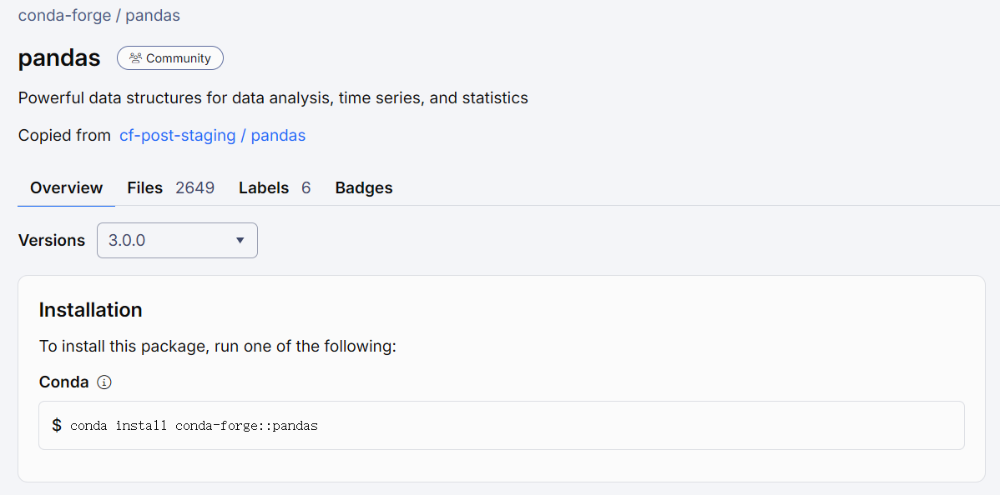

conda --version # 查看Conda版本conda 24.11.3Written by ZiangZ
根据Conda官方文档，Conda是一个开源的包和环境管理系统，可在Windows、Mac OS和Linux上运行。
Conda能够快速安装、运行和更新软件包及其依赖项；并方便地创建、保存、加载和切换项目特定的软件环境。虽然Conda最初是为Python程序创建的，但Conda可以打包和分发用于任何语言的软件，例如R、Ruby、Lua、Scala、Java、JavaScript、C、C++、FORTRAN。
Conda作为包管理器，是Miniconda和Anaconda的基础和核心。
以下的演示都基于Miniconda
参考官方文档，下载对应操作系统平台的安装包，按照提示安装即可。
conda --version # 查看Conda版本conda 24.11.3命令conda env list查看已创建的环境列表。
Miniconda安装完成后默认环境为base
conda env list
# conda environments:
#
base * D:\conda
meme D:\conda\envs\meme
obabel D:\conda\envs\obabel
pubchem D:\conda\envs\pubchem
py2 D:\conda\envs\py2
rdkit D:\conda\envs\rdkit
输出的两列中，第一列为环境名，通常即右侧环境地址的目录名称。
*标识当前激活的环境
使用命令conda create -n 环境名称创建环境，由此创建的环境为空环境不包含其他包，如需Python或R可如下安装：
conda create -n rdkit python rdkit -y使用命令conda activate 环境名/环境路径可切换至目标环境
conda activate rdkit
conda env list
# conda environments:
#
base D:\conda
meme D:\conda\envs\meme
obabel D:\conda\envs\obabel
pubchem D:\conda\envs\pubchem
py2 D:\conda\envs\py2
rdkit * D:\conda\envs\rdkit
命令conda deactivate将退出当前激活的环境，退回至base
conda deactivate
conda env list
# conda environments:
#
base * D:\conda
meme D:\conda\envs\meme
obabel D:\conda\envs\obabel
pubchem D:\conda\envs\pubchem
py2 D:\conda\envs\py2
rdkit D:\conda\envs\rdkit
在每个独立的环境中可以安装不同版本的Python、R或者其他编程语言如Ruby、Lua、Scala、Java、JavaScript、C等。Python或R的第三方软件包也可以在不同的独立环境中安装不同的版本，方便解决不同版本的依赖问题。
使用命令conda install 软件名命令在当前已激活的环境中安装软件包。部分软件可能不在默认channels中
具体软件的安装命令可在Anacond官网搜索。
例如搜索pandas：

按照需求版本选择安装channel，例如需要安装pandas 3.0.0，则选择channel conda-forge中的pandas包：

由给出的命令安装即可